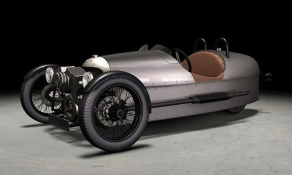

Thu, 11 Nov 2010 07:30:00 · Morgan · ThreeWheeler · Car · Retro · Design · BritishDesign
Morgan ThreeWheeler

Trop Awesome! Le retour de l’un de ses grands classiques, la fameuse #MorganThreeWheeler • http://is.gd/gVbY1
Thu, 11 Nov 2010 07:30:00 · Morgan · ThreeWheeler · Car · Retro · Design · BritishDesign

Trop Awesome! Le retour de l’un de ses grands classiques, la fameuse #MorganThreeWheeler • http://is.gd/gVbY1